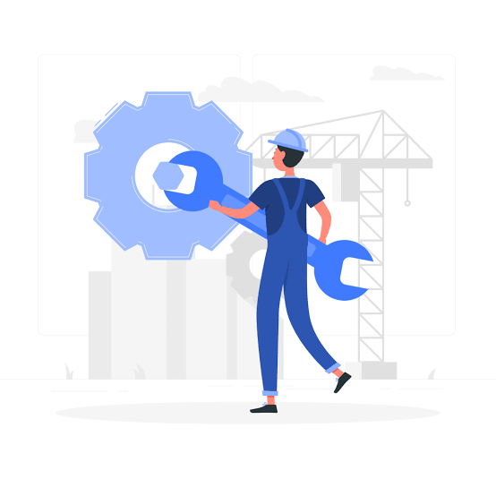

Cronos Festival
En la web del festival estamos teniendo problemas técnicos y por el momento está en mantenimiento solucionando las incidencias surgidas.
- Ir a la sección de noticias
- Ir a la sección de artistas
- Ir a la galería
- Ir al programa